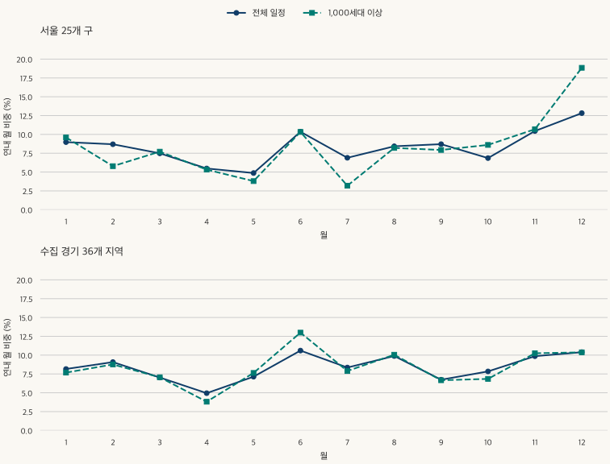
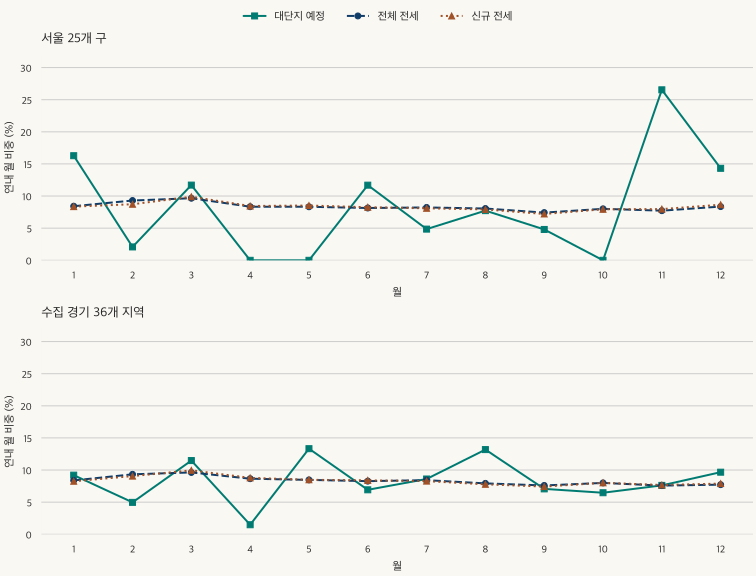

계절과 계약 달력 · 대단지 입주 시기
대단지 입주는 몇 월에 몰릴까? 서울·경기 16년 입주 예정 달력
서울·수집 경기의 2010~2025년 입주 예정 월 분포를 전체·대단지로 비교합니다. 평균 최고 월과 개별 연도, 최대 단지의 영향, 전세 계약 달력의 차이와 2026년 부분 기간을 확인하세요.
분석 기간 · 2010~2025 · 2026.1~9 별도 | 자료 기준일 · 2026-10-03
대단지 입주가 많은 달에 맞춰 전세를 알아보면 선택지가 넓어질까요? 먼저 입주가 해마다 같은 달에 몰리는지 확인해야 합니다. 2010~2025년 KB 입주 일정에서 1,000세대 이상 단지의 연내 월 비중을 해마다 계산해 평균하면, 서울은 12월 18.8%, 수집 경기 지역은 6월 13.0%가 가장 높았습니다. 그러나 그 달이 각 해의 최대였던 경우는 서울 4년, 경기 3년뿐입니다.
이 달력은 실제 입주가 끝난 날짜를 세었나요?
아닙니다. KB부동산 주택공급 자료의 단지별 입주 일정 월과 표시된 총세대수를 사용했습니다. 서울 25개 구와 수집 경기 36개 시·구가 대상이며 인천과 미수집 경기 지역은 포함하지 않습니다. 아파트와 주상복합을 포함하는 제공처 목록으로, 개별 주택의 법적 유형이나 실제 입주 완료를 전수 확인한 자료는 아닙니다.
자료는 2026년 10월 3일 수집한 현재 보유 이력입니다. 지난 일정도 수정될 수 있어, 해당 연도 당시 알려졌던 전망을 복원한 결과가 아닙니다. 같은 주택을 가리키는 여러 단지 번호나 누락이 남을 수 있습니다. 아래의 전체 물량은 목록에 표시된 세대수의 합이며 실제 거주가구 수나 모든 주택의 공급 총량과 같다고 보지 않습니다.
대단지는 표시된 총세대수가 1,000세대 이상인 기록으로 정했습니다. 전체와 1,000세대 미만도 함께 비교하고, 500·2,000세대 기준으로 바꾼 결과를 확인했습니다. 임대 표시가 없다고 비임대라고 가정하거나 임대 단지를 제외하지 않았습니다.
대단지만 보면 전체 입주 일정과 어떻게 달라지나요?
서울은 전체 목록의 12월 평균 비중이 12.8%인데, 대단지만 보면 18.8%입니다. 수집 경기에서는 전체의 6월 비중이 10.6%, 대단지는 13.0%입니다. 한 단지에 한 표를 주어 기록 수로 계산해도 대단지의 최고 월은 서울 12월, 경기 6월로 같습니다.

| 예정 월 | 전체 · 세대수 | 1,000세대 이상 · 세대수 | 1,000세대 미만 · 세대수 | 1,000세대 이상 · 기록 수 |
|---|---|---|---|---|
| 1월 | 9.0% | 9.6% | 10.1% | 8.7% |
| 2월 | 8.7% | 5.8% | 9.9% | 6.7% |
| 3월 | 7.5% | 7.7% | 7.1% | 6.4% |
| 4월 | 5.5% | 5.3% | 6.1% | 5.6% |
| 5월 | 4.9% | 3.8% | 5.9% | 4.6% |
| 6월 | 10.3% | 10.3% | 9.4% | 13.5% |
| 7월 | 6.9% | 3.2% | 9.4% | 4.1% |
| 8월 | 8.4% | 8.2% | 8.1% | 10.3% |
| 9월 | 8.7% | 7.9% | 8.8% | 8.7% |
| 10월 | 6.9% | 8.6% | 6.7% | 6.7% |
| 11월 | 10.4% | 10.7% | 9.0% | 7.6% |
| 12월 | 12.8% | 18.8% | 9.5% | 17.0% |
| 예정 월 | 전체 · 세대수 | 1,000세대 이상 · 세대수 | 1,000세대 미만 · 세대수 | 1,000세대 이상 · 기록 수 |
|---|---|---|---|---|
| 1월 | 8.2% | 7.7% | 8.6% | 6.9% |
| 2월 | 9.1% | 8.8% | 9.4% | 8.8% |
| 3월 | 7.0% | 7.1% | 7.1% | 7.5% |
| 4월 | 4.9% | 3.8% | 6.1% | 4.1% |
| 5월 | 7.1% | 7.6% | 6.7% | 7.2% |
| 6월 | 10.6% | 13.0% | 8.8% | 12.8% |
| 7월 | 8.4% | 7.9% | 8.5% | 6.8% |
| 8월 | 9.9% | 10.1% | 9.8% | 11.2% |
| 9월 | 6.7% | 6.7% | 7.0% | 7.3% |
| 10월 | 7.8% | 6.8% | 8.5% | 6.9% |
| 11월 | 9.9% | 10.2% | 9.2% | 10.2% |
| 12월 | 10.4% | 10.4% | 10.4% | 10.4% |
1,000세대 미만은 서울 1월, 경기 12월이 평균상 가장 높습니다. 전체 공급과 대단지, 소규모 단지의 달력이 같지 않은 것입니다. 다만 비중 차이가 작으면 어느 해를 포함하는지에 따라 최고 월이 바뀔 수 있습니다. 한 달의 순위만으로 일반적인 이사철을 정하지 않는 이유입니다.
평균의 최고 월은 16년 내내 반복됐나요?
그렇지 않습니다. 대단지의 최고 월이 서울 12월이었던 해는 16년 중 4년, 경기 6월이었던 해는 3년입니다. 평균에 드러난 집중과 개별 연도의 반복은 다른 질문입니다. 연도별 수록 규모와 최고 월은 글 끝의 원 집계 표에서 확인할 수 있습니다.
| 기간 | 서울 | 수집 경기 |
|---|---|---|
| 2010~2025 | 12월 · 18.8% | 6월 · 13.0% |
| 2010~2017 | 12월 · 17.7% | 6월 · 16.2% |
| 2018~2025 | 12월 · 20.0% | 1월 · 12.0% |
| 2022~2025 | 11월 · 26.5% | 5월 · 13.3% |
| 2010~2024 | 12월 · 19.3% | 6월 · 13.5% |
전반 8년과 후반 8년을 나누면 서울 대단지는 두 기간 모두 12월이 높지만, 경기 대단지는 6월에서 1월로 바뀝니다. 최근 4년인 2022~2025년은 서울 11월, 경기 5월입니다. 경기의 최근 4년 비중은 5월 13.3%와 8월 13.2%로 가깝고, 네 해의 물량을 모두 합산하면 8월이 가장 높아집니다.
“큰 단지 한두 곳 때문에 높아진 것 아닐까요?”라는 반론도 확인했습니다. 해마다 해당 광역에서 세대수가 가장 큰 기록을 하나씩 제외한 뒤 다시 계산했습니다. 16년 대단지 평균의 최고 월은 유지되지만, 최근 4년의 최고는 서울 11월에서 6월, 경기 5월에서 8월로 바뀝니다. 가까운 미래의 반복 패턴으로 받아들이기에는 단지 구성이 미치는 영향이 큽니다.
| 조건 | 서울 | 수집 경기 |
|---|---|---|
| 2010~2025 · 수록 값 | 12월 · 18.8% | 6월 · 13.0% |
| 2010~2025 · 해마다 최대 기록 1개 제외 | 12월 · 18.7% | 6월 · 14.1% |
| 2022~2025 · 수록 값 | 11월 · 26.5% | 5월 · 13.3% |
| 2022~2025 · 해마다 최대 기록 1개 제외 | 6월 · 21.4% | 8월 · 14.6% |
| 500세대 이상 · 유효 연도 평균 | 12월 · 15.2% (16년) | 6월 · 11.3% (16년) |
| 2,000세대 이상 · 유효 연도 평균 | 11월 · 16.1% (14년) | 1월 · 17.3% (13년) |
2,000세대 이상은 수록량이 없는 해가 서울 2년, 경기 3년 있습니다. 그 해의 월 비중은 계산할 수 없습니다. 위 표의 14년·13년 평균을 16년 평균과 같은 범위라고 부르면 안 됩니다. 전체 목록도 최대 단지에 민감해, 서울은 매년 최대 기록을 제외하면 16년 평균의 최고 월이 12월에서 6월로 달라집니다.
중복 가능성도 따로 확인했습니다. 같은 달 가까운 위치에 기록된 단지 후보를 모두 제외해도 전체의 최고 월은 서울 12월·경기 6월로 유지됐습니다. 후보 중에는 전체 사업과 그 일부 단지가 함께 들어간 사례가 있어 원본과 이를 구분한 계산을 비교했습니다. 발견한 후보를 점검한 결과이지, 모든 중복과 누락이 없다는 보장은 아닙니다.
입주 예정이 많은 달에 전세 계약도 가장 많았나요?
같은 지역·같은 2022~2025년으로 맞춰도 최고 월은 달랐습니다. 전체 입주 예정 세대수는 서울 11월, 수집 경기 8월의 평균 비중이 높았습니다. 대단지는 각각 11월·5월이며, 전체 전세와 신규 전세의 월별 계약 비중은 두 지역 모두 3월이 가장 높았습니다.

| 월 | 전체 입주 예정 · 세대수 | 대단지 입주 예정 · 세대수 | 전체 전세 · 계약 | 신규 전세 · 계약 |
|---|---|---|---|---|
| 1월 | 13.3% | 16.3% | 8.4% | 8.4% |
| 2월 | 6.0% | 2.1% | 9.3% | 8.7% |
| 3월 | 10.6% | 11.7% | 9.7% | 9.9% |
| 4월 | 3.1% | 0.0% | 8.3% | 8.5% |
| 5월 | 2.2% | 0.0% | 8.3% | 8.5% |
| 6월 | 10.6% | 11.7% | 8.1% | 8.3% |
| 7월 | 8.5% | 4.9% | 8.2% | 8.1% |
| 8월 | 7.5% | 7.7% | 8.1% | 7.9% |
| 9월 | 4.6% | 4.8% | 7.4% | 7.2% |
| 10월 | 2.5% | 0.0% | 8.0% | 7.9% |
| 11월 | 20.3% | 26.5% | 7.7% | 8.0% |
| 12월 | 11.0% | 14.3% | 8.4% | 8.7% |
| 월 | 전체 입주 예정 · 세대수 | 대단지 입주 예정 · 세대수 | 전체 전세 · 계약 | 신규 전세 · 계약 |
|---|---|---|---|---|
| 1월 | 7.7% | 9.2% | 8.4% | 8.3% |
| 2월 | 6.9% | 5.0% | 9.3% | 9.1% |
| 3월 | 11.1% | 11.5% | 9.6% | 10.0% |
| 4월 | 4.2% | 1.5% | 8.7% | 8.8% |
| 5월 | 9.3% | 13.3% | 8.5% | 8.5% |
| 6월 | 7.9% | 6.9% | 8.3% | 8.4% |
| 7월 | 7.8% | 8.6% | 8.4% | 8.3% |
| 8월 | 12.7% | 13.2% | 7.9% | 7.8% |
| 9월 | 8.0% | 7.1% | 7.6% | 7.4% |
| 10월 | 6.9% | 6.5% | 8.0% | 8.0% |
| 11월 | 7.3% | 7.6% | 7.6% | 7.7% |
| 12월 | 10.1% | 9.7% | 7.7% | 7.9% |
앞선 전세 계약 달력에서 2월의 하루 기준 활동이 높았다는 결과와 모순되지 않습니다. 이 표는 달 전체의 비중이므로 짧은 2월의 일수 차이를 보정하지 않았습니다. 입주 일정과 계약의 비교에서도 날짜와 분모, 월 길이 보정 여부를 함께 맞춰야 합니다.
전세 계약월이 입주 예정 월보다 앞선다고 해서 이 자료만으로 평균 몇 개월 전에 계약한다고 계산할 수는 없습니다. 여기에는 같은 주택·같은 가구를 이어 붙인 정보가 없습니다. 대단지 공급 외에도 기존 주택의 신규·갱신 계약이 포함되므로, 두 달력의 차이를 공급이 전세 계약을 움직인 효과로 해석하지 않습니다.
2026년을 16년 평균에 합치지 않은 이유는 무엇인가요?
보유 목록의 2026년 범위가 1~9월이기 때문입니다. 서울은 36개 기록에 13,216세대, 수집 경기는 38개 기록에 31,704세대가 표시되어 있습니다. 그중 1,000세대 이상은 각각 3개 기록·7,020세대와 14개 기록·20,825세대입니다. 아래는 이 기간 안의 수록 일정이며 올해 전체 공급 실적이 아닙니다.
| 예정 월 | 서울 전체 | 서울 대단지 | 수집 경기 전체 | 수집 경기 대단지 |
|---|---|---|---|---|
| 1월 | 2,670 | 1,865 | 2,782 | 2,644 |
| 2월 | 962 | 0 | 5,617 | 3,267 |
| 3월 | 780 | 0 | 3,739 | 2,751 |
| 4월 | 822 | 0 | 4,156 | 3,506 |
| 5월 | 558 | 0 | 1,609 | 0 |
| 6월 | 784 | 0 | 3,268 | 2,180 |
| 7월 | 199 | 0 | 4,558 | 3,254 |
| 8월 | 2,963 | 2,091 | 3,264 | 2,178 |
| 9월 | 3,478 | 3,064 | 2,711 | 1,045 |
표에 없는 10~12월을 0으로 채우면 연말 비중이 낮아지는 잘못된 달력이 됩니다. 1~9월만으로 연말 물량을 예측하거나, 입주 예정 세대수와 실제 잔금 납부·입주 완료 가구 수를 같다고 보지도 않습니다.
입주 예정 달력과 준공 뒤에도 남아 있는 주택은 다른 통계입니다. 준공 후 미분양의 면적별 구성에서는 큰 면적 비중이 높고 낮았던 시기와 같은 기간 매매의 차이를 확인할 수 있습니다.
이사할 집을 고를 때 이 달력을 어떻게 쓰면 좋을까요?
- 원하는 단지의 실제 일정을 확인합니다. 과거 월 평균보다 입주 지정기간, 사용승인, 잔금·대출 일정이 내 계획에 직접 필요합니다.
- 기사의 지역과 분모를 적어 봅니다. 전국인지 서울인지, 전체인지 대단지만인지, 예정 세대수인지 계약 건수인지 구분합니다.
- 큰 단지의 영향을 확인합니다. 한 사업의 전체와 일부 단지를 함께 더하지 않았는지, 특정 단지 하나를 빼도 비슷한 설명인지 살펴봅니다.
- 실제 제시 조건을 비교합니다. 입주 예정이 많은 달이라도 현재 전세 매물과 보증금·월세, 가능한 입주일은 별도로 확인해야 합니다. 과거 물량만으로 계약을 서두르거나 미루지 않습니다.
이 자료의 답은 “서울은 무조건 연말, 경기는 무조건 여름에 이사한다”가 아닙니다. 오래 합친 대단지 일정에는 높은 달이 있지만, 최근 기간과 개별 연도는 달라집니다. 평균 달력은 뉴스의 숫자를 점검하는 기준으로 쓰고, 실제 이사는 해당 단지와 계약의 날짜에 맞춰 판단하세요.
원 집계·자료 범위·중복 검토 자세히 보기
KB 주택공급의 단지별 입주 일정 8,074개 기록을 사용했습니다. 수집일은 2026년 10월 3일, 수록 일정은 2010년 1월~2026년 9월입니다. 주 비교는 2010~2025년의 완결 달력연도이며 2026년은 별도입니다. 단지별 총세대수와 일정 월을 두 가지 방법으로 따로 합산해 일치하는지 확인했습니다. 제공처의 별도 광역 총량과 목록 합계는 일부 달에서 다르므로 전체 공급의 완전한 세부 내역으로 제시하지 않습니다.
대단지 기준은 1,000세대 이상, 보조 기준은 500·2,000세대입니다. 연도 동일 가중 평균과 모든 세대수 합산, 기록 수 가중, 한 해씩 제외, 전후 8년 분할, 2025년 제외, 해마다 최대 기록 하나 제외를 비교했습니다. 같은 최대 규모가 여러 개면 미리 정한 단지 번호 순서의 첫 기록만 제외합니다. 소수점 첫째 자리 표시는 반올림 전 값으로 계산한 뒤 적용했습니다.
같은 지역·일정 월에서 같은 세대수·250m 이내 또는 다른 세대수·100m 이내의 중심점을 중복 후보로 찾았습니다. 220쌍에 걸친 385개 기록이 해당하며, 가까운 별도 건물도 들어갈 수 있습니다. 공식 판교 퍼스트힐 공급 안내의 A1 529세대·A2 445세대와 KB의 전체 974세대/2단지 445세대 기록을 대조해, 전체 사업만 남기는 경우와 두 블록으로 구분하는 경우를 비교했습니다. 후보를 전부 제외하는 계산도 정답이 아닌 민감도입니다.
후보를 임의로 유지하거나 제거할 때 전체 서울 12월의 평균 비중은 약 12.7~13.0%, 경기 6월은 약 10.6~10.7% 범위였습니다. 이 범위는 발견 후보만 다룹니다. 각 월의 최솟값과 최댓값이 동시에 나타나는 하나의 달력이나 통계적 신뢰구간은 아닙니다. 1,000세대 이상은 발견 후보 안에 없었지만, 이 기준 밖의 중복 부재를 입증한 것은 아닙니다.
전세 비교는 기발행 글의 2022~2025년 공개 집계를 그대로 사용했습니다. 서울 25구·수집 경기 36지역, 계약 체결월 기준이며 신규·전체 전세를 구분합니다. 전세 자료 기준일은 2026년 10월 4일입니다. 현재 주택 재고나 개별 임차인, KB 단지와 계약을 연결해 새 비율을 만들지 않았습니다.
| 연도 | 전체 기록 | 전체 세대수 | 대단지 기록 | 대단지 세대수 | 대단지 비중 최고 월 |
|---|---|---|---|---|---|
| 2010 | 148 | 34,552 | 9 | 10,777 | 5월 |
| 2011 | 191 | 39,159 | 8 | 11,196 | 12월 |
| 2012 | 294 | 27,177 | 4 | 7,445 | 10월 |
| 2013 | 308 | 32,329 | 5 | 8,493 | 12월 |
| 2014 | 264 | 46,139 | 14 | 22,277 | 6월 |
| 2015 | 273 | 28,625 | 7 | 12,090 | 10월 |
| 2016 | 374 | 33,153 | 6 | 10,097 | 11월 |
| 2017 | 391 | 35,353 | 8 | 13,380 | 3월 |
| 2018 | 404 | 43,415 | 7 | 16,116 | 12월 |
| 2019 | 384 | 51,785 | 16 | 27,119 | 9월 |
| 2020 | 395 | 53,407 | 17 | 28,845 | 2월 |
| 2021 | 337 | 36,623 | 8 | 12,384 | 1월 |
| 2022 | 301 | 30,379 | 7 | 10,280 | 1월 |
| 2023 | 168 | 34,388 | 9 | 21,288 | 12월 |
| 2024 | 102 | 26,560 | 4 | 15,641 | 11월 |
| 2025 | 65 | 35,917 | 10 | 22,345 | 11월 |
| 연도 | 전체 기록 | 전체 세대수 | 대단지 기록 | 대단지 세대수 | 대단지 비중 최고 월 |
|---|---|---|---|---|---|
| 2010 | 168 | 76,564 | 14 | 21,477 | 9월 |
| 2011 | 79 | 36,247 | 15 | 18,592 | 11월 |
| 2012 | 158 | 57,319 | 16 | 22,689 | 12월 |
| 2013 | 193 | 45,474 | 10 | 18,223 | 5월 |
| 2014 | 187 | 40,070 | 11 | 14,714 | 6월 |
| 2015 | 247 | 64,181 | 23 | 30,062 | 10월 |
| 2016 | 339 | 70,234 | 19 | 31,093 | 11월 |
| 2017 | 377 | 101,570 | 27 | 38,545 | 8월 |
| 2018 | 407 | 142,322 | 43 | 62,256 | 6월 |
| 2019 | 348 | 109,796 | 33 | 47,481 | 6월 |
| 2020 | 228 | 82,307 | 26 | 48,704 | 7월 |
| 2021 | 263 | 84,899 | 24 | 42,964 | 1월 |
| 2022 | 232 | 79,908 | 23 | 38,125 | 7월 |
| 2023 | 160 | 69,006 | 22 | 36,480 | 2월 |
| 2024 | 136 | 79,835 | 25 | 42,209 | 8월 |
| 2025 | 79 | 53,093 | 13 | 23,886 | 5월 |
월별 수록 값과 기간·규모·가중치별 비교는 공개 집계 파일(JSON)에 있습니다. 정확한 입주 완료율, 현재 매물 수, 계절의 원인이나 향후 가격·공급 전망은 계산하지 않았습니다. 공식 안내 확인일은 2026년 10월 12일입니다.
분석·집필: 파파펭귄 (Nobot Kang). 에이전트로 공식 자료 대조·수치 검산·초안 검토를 보조했습니다.